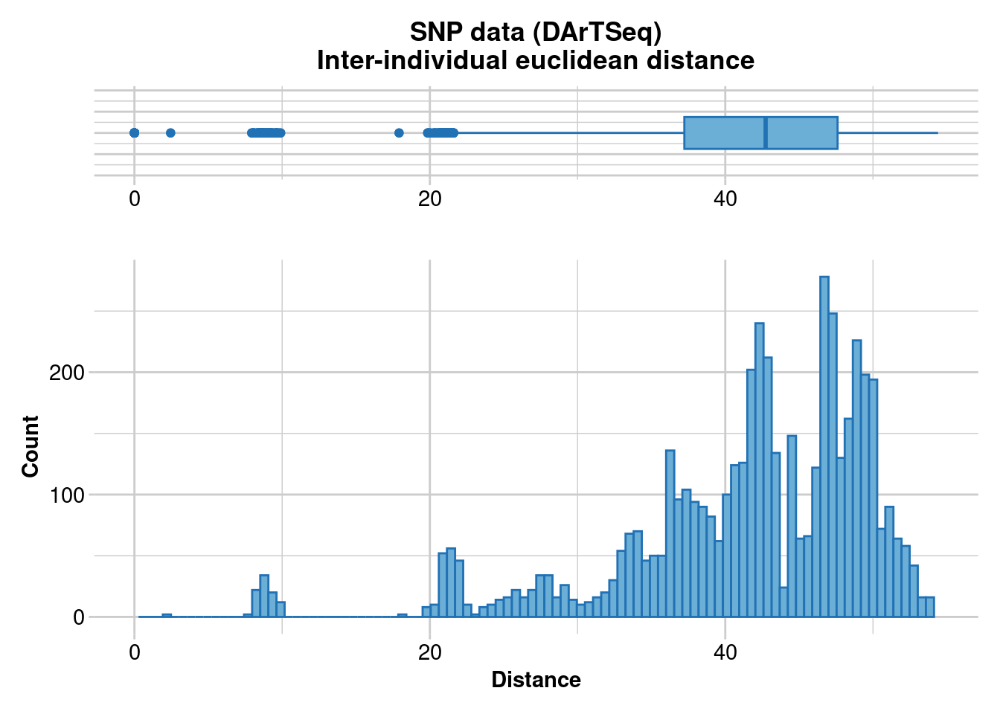
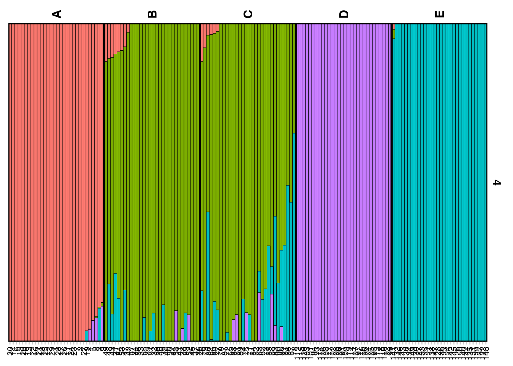

#install.packages('gplots')
#install.packages('iterpc')
#install.packages('expm')
library(dartRverse)
library(dartR.popgen)12 Genetic Structure
Session Presenters
Required packages
As always we need to have dartRverse installed and loaded. In addition you need to have dartR.popgen installend.
make sure you have the packages installed, see Install dartRverse
Genetic Distance and Visualization
Load data and explore
# Read in the example data
gl <- readRDS("./data/Example_12.1_SNP.Rdata")
# Interrogate to see what the data are
nLoc(gl)[1] 10529nInd(gl)[1] 113table(pop(gl))
signata farnorth krefftii nigra gunabarra emmottii macquarii
11 10 10 10 10 10 10
subglobosa worrelli tanybaraga victoriae
10 10 12 10 Calculate Distance
# Calculate an Euclidean Distance Matrix on individuals
D <- gl.dist.ind(gl)Starting gl.dist.ind
Processing genlight object with SNP data
Calculating raw Euclidean Distances between individuals Returning a stat::dist object
Completed: gl.dist.ind # Represent visually as a heat map
gl.plot.heatmap(D)Starting gl.plot.heatmap
Processing a distance matrix
Starting gl.colors
Selected color type div
Completed: gl.colors 
Completed: gl.plot.heatmap PCA
# Undertake a PCA on the raw data
pc <- gl.pcoa(gl)Starting gl.pcoa
Processing genlight object with SNP data
Performing a PCA, individuals as entities, loci as attributes, SNP genotype as state
Starting gl.colors
Selected color type 2
Completed: gl.colors 
Completed: gl.pcoa # Plot the first two dimensions of the PCA
gl.pcoa.plot(pc,gl,pop.labels="legend")Starting gl.pcoa.plot
Processing an ordination file (glPca)
Processing genlight object with SNP data
Plotting populations identified by a legend
Preparing plot .... please wait
Completed: gl.pcoa.plot # Plot the first and third dimensions of the PCA
gl.pcoa.plot(pc,gl,xaxis=1,yaxis=3, pop.labels="legend")Starting gl.pcoa.plot
Processing an ordination file (glPca)
Processing genlight object with SNP data
Plotting populations identified by a legend
Preparing plot .... please waitCompleted: gl.pcoa.plot Select one cluster
# Select only the data from one cluster in the primary PCA
temp <- gl.drop.pop(gl, pop.list=c("victoriae","subglobosa",
"worrelli","tanybaraga"))Starting gl.drop.pop
Processing genlight object with SNP data
Checking for presence of nominated populations, deleting them
Warning: Resultant dataset may contain monomorphic loci
Locus metrics not recalculated
Completed: gl.drop.pop # Plot the first two dimensions of the secondary PCA
pc <- gl.pcoa(temp)Starting gl.pcoa
Processing genlight object with SNP data
Performing a PCA, individuals as entities, loci as attributes, SNP genotype as state
Starting gl.colors
Selected color type 2
Completed: gl.colors Completed: gl.pcoa gl.pcoa.plot(pc, temp,pop.labels="legend")Starting gl.pcoa.plot
Processing an ordination file (glPca)
Processing genlight object with SNP data
Plotting populations identified by a legend
Preparing plot .... please wait
Completed: gl.pcoa.plot # Repeat the analysis as a PCoA
D <- gl.dist.ind(temp)Starting gl.dist.ind
Processing genlight object with SNP data
Calculating raw Euclidean Distances between individuals Returning a stat::dist object
Completed: gl.dist.ind pco <- gl.pcoa(D)Starting gl.pcoa
Processing a distance matrix
Performing a PCoA, individuals as entities, no correction applied
Starting gl.colors
Selected color type 2
Completed: gl.colors 
Completed: gl.pcoa gl.pcoa.plot(pco,temp,pop.labels="legend")Starting gl.pcoa.plot
Processing an ordination file (glPca)
Processing genlight object with SNP data
Plotting populations identified by a legend
Preparing plot .... please wait
Completed: gl.pcoa.plot Structure and FastStructure
To run STRUCTURE from within R, we need to install the non-GUI executable (the version without frontend) for your operating system [e.g windows, mac or linux]. You can download STRUCTURE for your OS from http://web.stanford.edu/group/pritchardlab/structure_software/release_versions/v2.3.4/html/structure.html.
To let R know where the executable is, you need to set the path to the executable. For example, under windows, if you have the executable in d:/programms/structure/structure.exe, you can use the command below.
Running STRUCTURE
The small example below is just to test if the programm is set up correctly, hence the binary for your system is in the right place and the path is set correctly.
#quick test to run on windows
bc <- bandicoot.gl[,1:10]
sr <- gl.run.structure(bc, k.range = 2:6, num.k.rep = 5, exec = 'd:/programms/structure/structure.exe' )for Linux/Mac the command might look like this:
#quick test to run on linux/mac
bc <- bandicoot.gl[,1:10]
sr <- gl.run.structure(bc, k.range = 2:6, num.k.rep = 5, exec = '../binaries/linux/structure' )A more serious example: simulated possums
For this example we will run STRUCTURE on a simulated dataset of possums. The dataset is a genlight object and contains 10 populations of 30 individuals each and 1000 loci and is part of the dartRverse package. The populations are fairly independent but are linked by some imigration, so a typical Metapopulation scenario. The populations are named A to J and follow more or less an isolation by distance (actually an isolation by resistance model). So population next to each other (e.g. B and C) are fairly well mixed and populations further apart from the rest (e.g. D) are more isolated.
To simplify this further we limit our exercise to the first 150 individuals only (which entails now 5 populations a 30 individuals, A to $E). To get an overview on the population we use the function: gl.map.interactive which plots the individuals on a map. Please note the genlight/dartR object needs to have valid lat long coordinates for each individual to be able to do so.
Also be aware this tutorial will not talk about how to filter your data set before running structure. For this please refer to the previous tutorials on filtering and data preparation.
possums <- possums.gl[1:150,] #only the first 150 individuals
table(pop(possums)) #check the individuals and the populations
A B C D E
30 30 30 30 30 gl.map.interactive(possums)Starting gl.map.interactive
Processing genlight object with SNP data
Completed: gl.map.interactive As mentioned this is a simulated data set and we know the true population structure. Populations B and C are very close to each other so those are basically one population and E is at least somewhat in the vicinity. To confirm that our simulation was successful, we quickly can run a pcoa to confirm the population structure.
pcoa <- gl.pcoa(possums, plot.out = FALSE, verbose = 0)Starting gl.colors
Selected color type 2
Completed: gl.colors pcoaplot <- gl.pcoa.plot(pcoa, possums, verbose = 0)
And yes it looks like expected.
Exercise PCOA and a map
 Confirm that you understand how the map and the pcoa plot relate to each other.
Confirm that you understand how the map and the pcoa plot relate to each other.
Now, lets see what kind of information we can get from a structure run.
Different to the above we run structure with at least some repetitions for each K (num.k.rep=10) and also over a suitable range. Unfortunately, this takes a while and we will not run it here. Instead we will load the results from a previous run that is saved in the data folder of this repository. [In case you want to re-run structure simply rename or delete the file in your folder, but be aware that this will take a while.].
if (file.exists("./data/srnoad.rds")) {
srnoad<- readRDS("./data/srnoad.rds")
} else {
possums <- possums.gl[1:150,]
srnoad <- gl.run.structure(possums, k.range = 2:7, num.k.rep = 10, exec =
'./binaries/structure',plot.out = FALSE,
burnin=50000, numreps=100000, noadmix=FALSE)
saveRDS(srnoad, "./data/srnoad.rds")
}Hey this was quick! We have the results of the structure run. Let’s see what we can do with it.
Structure run (no-admixture)
To run structure we use an dartR implementation of functions which is based on the functions provided by the strataG package (F. Archer (2016)). There you can find a detailed description of the function and its arguments. We had to integrate the functionality because strataG is no longer on CRAN.
The possible arguments are listed below:
| parameter | description |
|---|---|
| k.range | vector of values to for maxpop in multiple runs. If set to NULL, a single STRUCTURE run is conducted with maxpops groups. If specified, do not also specify maxpops. |
| num.k.rep | number of replicates for each value in k.range. |
| label | label to use for input and output files |
| delete.files | logical. Delete all files when STRUCTURE is finished? |
| exec | name of executable for STRUCTURE. Defaults to “structure”. |
| burnin | number of iterations for MCMC burnin. |
| numreps | number of MCMC replicates. |
| noadmix | logical. No admixture? |
| freqscorr | logical. Correlated frequencies? |
| randomize | randomize. |
| pop.prior | a character specifying which population prior model to use: “locprior” or “usepopinfo”. |
| locpriorinit | parameterizes locprior parameter r - how informative the populations are. Only used when pop.prior = “locprior”. |
| maxlocprior | specifies range of locprior parameter r. Only used when pop.prior = “locprior”. |
| gensback | integer defining the number of generations back to test for immigrant ancestry. Only used when pop.prior = “usepopinfo”. |
| migrprior | numeric between 0 and 1 listing migration prior. Only used when pop.prior = “usepopinfo”. |
| popflag | a vector of integers (0, 1) or logicals identifiying whether or not to use strata information. Only used when pop.prior = “usepopinfo”. |
| pops | vector of population labels to be used in place of numbers in STRUCTURE file. |
Some words about admixture
Admixture Model
Definition: The admixture model assumes that individuals can have ancestry from multiple populations. This means that the genetic makeup of an individual can be a mixture of two or more populations. This model is particularly useful for analyzing genetic data from populations that are known to have mixed or where there is gene flow between populations.
Application: It is applied when there is historical or recent admixture between populations, and it allows for the estimation of individual ancestry proportions from each of the inferred clusters. For example, an individual might be 50% from population A, 30% from population B, and 20% from population C under the admixture model.
Utility: The admixture model can uncover complex patterns of genetic structure that are not apparent under the assumption of discrete, non-overlapping populations.
No-Admixture Model
Definition: The no-admixture model assumes that individuals have ancestry from only one population. This model is particularly useful for analyzing genetic data from populations that are known to be isolated from one another.
Application: This model is used in situations where populations are relatively well-defined and isolated, with little to no gene flow between them. It simplifies the analysis by considering that an individual’s entire genetic information originates from one of the K clusters without any mixture.
Utility: The no-admixture model is useful for identifying distinct populations and their members, especially in cases where populations are clearly separated geographically or temporally.
Structure Results
Okay now that we got that out of our way lets see how to interprete the results of the structure run.
Evanno Plots
The Evanno method is a statistical approach used to determine the most likely number of genetic clusters (K) present in a dataset analyzed by STRUCTURE software. STRUCTURE is a computational tool used for inferring population structure using genetic data. Identifying the correct number of clusters (K) is crucial for accurately interpreting genetic data in the context of population structure, evolutionary biology, and conservation genetics. The Evanno method specifically addresses the challenge of choosing the optimal K by analyzing the rate of change in the likelihood of data between successive K values, rather than just relying on the maximum likelihood. This is done through the calculation of ΔK, a quantity based on the second order rate of change of the likelihood function with respect to K. The method suggests that the value of K corresponding to the highest ΔK should be considered the most likely number of clusters present in the dataset.
The Evanno method is a method to determine the most likely number of populations. It is based on the second order rate of change of the likelihood function with respect to K. The method is implemented in the gl.evanno function.
ev <- gl.evanno(srnoad)
Plotting the results (Q matrix)
The Q matrix represents the estimated ancestry proportions of individuals across different inferred genetic clusters. STRUCTURE aims to identify K clusters (populations) that best explain the patterns of genetic variation observed in the data, with K either being predefined by the user or determined using methods like the Evanno method.
The Q matrix is essentially a matrix where each row corresponds to an individual in the dataset, and each column represents one of the K inferred genetic clusters. The entries in the matrix are the estimated proportions (ranging from 0 to 1) of each individual’s genome that originated from each cluster. The sum of an individual’s ancestry proportions across all K clusters equals 1.
The values in the Q matrix can be interpreted as the fraction of an individual’s ancestry that comes from each of the K clusters. The Q matrix is often visualized using bar plots or stacked bar graphs, where each individual’s ancestry proportions are shown as segments of a bar colored differently for each cluster.
To get a plot for a certain level you need to specify K or at least a range of K.
qmatnoad <- gl.plot.structure(srnoad, K=3, clumpak = TRUE)Starting gl.plot.structure 
Completed: gl.plot.structure head(qmatnoad[[1]]) Label cluster1 cluster2 cluster3 K orig.pop ord
<char> <num> <num> <num> <char> <fctr> <int>
1: 1 0 0 1 3 A 1
2: 10 0 0 1 3 A 2
3: 100 0 1 0 3 D 91
4: 101 0 1 0 3 D 92
5: 102 0 1 0 3 D 93
6: 103 0 1 0 3 D 94A “spatial” structure plot
gm <- gl.map.structure(qmat = qmatnoad, x = possums, K=3, scalex=1, scaley=0.5 )
Exercise: Study the results using different Ks
 The above run was a structure run using the no-admixture model for a range of K=2:7. Study the results by plotting it for various Ks and try to interpret the results in the light of the simulated population structure.
The above run was a structure run using the no-admixture model for a range of K=2:7. Study the results by plotting it for various Ks and try to interpret the results in the light of the simulated population structure.
Structure run (no-admixture=FALSE :-))
We will now run the same example using the admixture model. The only difference is that we will set the no-admixture parameter to FALSE.
if (file.exists("./data/srnoad.rds")) {
srad<- readRDS("./data/srad.rds")
} else {
possums <- possums.gl[1:150,]
srad <- gl.run.structure(possums, k.range = 2:7, num.k.rep = 10, exec =
'../binaries/linux/structure',plot.out = FALSE,
burnin=50000, numreps=100000, noadmix=FALSE)
saveRDS(srad, "./data/srad.rds")
}And again the evanno plots
ev <- gl.evanno(srad)
Something between 4-5 seems to be a good number of K.
Hence lets look at the qmat (for K=4) and then you can check the same for K=5
qmatad <- gl.plot.structure(srad, K=4)Starting gl.plot.structure 
Completed: gl.plot.structure head(qmatad[[1]]) Label cluster1 cluster2 cluster3 cluster4 K orig.pop ord
<char> <num> <num> <num> <num> <char> <fctr> <int>
1: 1 0.01889411 0.03918822 0.92092396 0.02099371 4 A 23
2: 10 0.01700341 0.02000401 0.94348888 0.01950371 4 A 24
3: 100 0.93530017 0.02700001 0.01900001 0.01869981 4 D 115
4: 101 0.94469458 0.01700171 0.02400241 0.01430130 4 D 111
5: 102 0.94820537 0.01699831 0.01479831 0.01999801 4 D 107
6: 103 0.91689208 0.02780251 0.02110211 0.03420331 4 D 118An the spatial version
gm <- gl.map.structure(qmat = qmatad, x = possums,K=4, scalex=1, scaley=0.5 )Faststructure
Faststructure is a faster implementation of the structure algorithm. Be aware though it is named Fast’structure’ it is a fairly different implementation of the original approach, hence the results might differ from the original STRUCTURE. The method is based on a variational Bayesian framework and is designed to be faster and more scalable than the original STRUCTURE software. It is particularly useful for analyzing large datasets with many individuals and/or many SNPs (>5000). One of the most important differences is that there is no no-admixture model in Faststructure, but you can run two models that allow for “complex” situtations (logistic prior) and situations where the ancestry is more evenly distributed (simple prior). Also the way how to identify K differ between the methods. We will run the previous examples with both settings and compare the results.
The method is now implemented in the gl.run.faststructure function. Unfortunatley noone to my knowledge has compiled Faststructure for windows, so it is only available for Linux and Mac. We also need to have plink installed as this is the required input format for faststructure.
Faststructure simple prior
#takes about 3 minutes
#fsr.sim <- gl.run.faststructure(possums, k.range = 2:7, num.k.rep = 10,
# exec = "./binaries/fastStructure", output = tempdir(),
# exec.plink="./binaries", prior = "simple")
#load from the previous run
fsr.simple <- readRDS(("./data/fsr.sim.rds"))Here is the output of the run:
fsr.simple$plot
Here we can check the marginal likelihoods for the different K values. The recommended K is then the one with the highest marginal likelihood at the lowest K possible. So here we would decide on K=4. As before we can plot the Q matrix and the spatial structure plot.
qmat.simple <- gl.plot.faststructure(fsr.simple$q_list, k.range = 4,clumpak = T)Starting gl.select.colors
Warning: No color library specified, set to scales and palette set to hue_pal
Need to select one of baseR, brewer, scales, gr.palette or gr.hcl
Showing and returning 4 colors for library scales : palette hue_pal Completed: gl.select.colors 
gm <-gl.map.structure(qmat.simple, K = 4, x = possums, scalex = 1, scaley = 0.5)Faststructure logistic prior
#takes about 4 minutes
#fsr.log <- gl.run.faststructure(possums, k.range = 2:7, num.k.rep = 10, exec = "./binaries/fastStructure", output = tempdir(), exec.plink="./binaries", prior = "logistic",)
fsr.log <- readRDS(("./data/fsr.log.rds"))Here is the output of the run:
fsr.log$plotAs before we can plot the Q matrix and the spatial structure plot.
qmat.log <- gl.plot.faststructure(fsr.log$q_list, k.range = 4,clumpak = T)
gm <-gl.map.structure(qmat.log, K = 4, x = possums, scalex = 1, scaley = 0.5)Exercises
Exercise: Compare Structure and Faststructure runs
 Now it is time to compare the results from all four previous runs.
Now it is time to compare the results from all four previous runs.
Exercise: Crocodiles
 If you are feeling energetic, you can try to run the structure and faststructure on the crocodile dataset. (crocs.rds)
If you are feeling energetic, you can try to run the structure and faststructure on the crocodile dataset. (crocs.rds)
This is a publically available dataset (though it has been filtered and pruned) from the paper:) to make is a bit easier to run. Nevertheless it still has >1500 SNPs and more then 400 individuals, so it takes a bit of time to run. If you do not want to wait I did two faststructure runs for you. * prior = simple, K=2:18 (max number of populations), but only 3 repeat (num.k.rep) * prior = logistic, K=2:18 (max number of populations), but only 3 repeat (num.k.rep)
Maybe plot the data first, have a look at a PCA and then decide on the number of populations (range of K) you want to run the faststructure on. It might also make sense to simplify the number of populations in a smaller number of subunits. A description of the dataset (and the original paper) can be found here: Fukuda et al. (2024)
crocs <- readRDS("./data/crocs.rds")
gl.map.interactive(crocs)Starting gl.map.interactive
Processing genlight object with SNP data
Completed: gl.map.interactive Further Study
Foxes in Australia
This is a data set (only a subset) of foxes in Australia, which I had lying around. Admittedly the dataset has been pruned, but maybe run a faststructure analysis to check for the population structure between foxes from the west and to the east.
foxes <- readRDS("./data/foxes.rds")
gl.map.interactive(foxes, pop.labels = FALSE)Starting gl.map.interactive
Processing genlight object with SNP data
Completed: gl.map.interactive Readings
Georges et al. (2023)
Battey, Ralph, and Kern (2020)